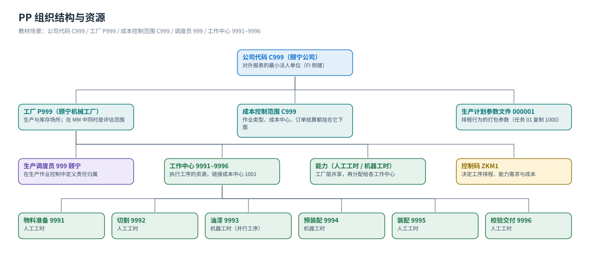

组织结构
工厂 / 成本控制范围 / 生产调度员 / 工作中心 / 能力 —— 先给数据定坐标
PP 的组织数据分三层看：公司代码 → 工厂（财务与生产场所）、工厂内的资源（工作中心、能力、生产调度员、生产计划参数文件）、与外部的接口（成本控制范围、库存地点、采购组织——后两者在 MM 教材里建）。教材 PP 的任务 01–13 基本都在给这些「格子」赋值，顺序反了后面会互相报错。
三层结构一张图
{kind=link}

① 工厂与生产场所（Enterprise / Plant）
| 对象 | 教材值 | 教材任务 | PP 里决定什么 |
|---|---|---|---|
| 公司代码 Company Code | C999 颐宁（画面名称：颐宁机械有限公司） | （FI 侧建） | 会计凭证落在哪套账上；与成本控制范围同码 |
| 工厂 Plant | P999 颐宁机械工厂 | 任务 02/08 等大量任务都按工厂维护 | 生产订单、工作中心、BOM 可用性、成本核算的边界；在 MM 里同时是评估范围 |
| 成本控制范围 Controlling Area | C999 | 任务 13 工作中心的成本核算页里显示 | 作业类型、成本中心、订单结算都挂在它下面 |
| 成本中心 Cost Center | 1001 Workshops | 任务 13 画面（工作中心链接到它） | 工作中心的费用归集地与作业价格（KP26）的承担者 |
| 库存地点 Storage Location | 0001（原材料收货）· 0003（贸易商品运输库） | 任务 40（收货）、任务 50（看库位） | 产成品与原材料收货/发货落到哪个库位 |
| 物料 | F999-100 铸钢泵 170-230 · T999-100 贸易商品 · R999-100…R999-500 | 任务 16/22 等 | 计划与成本核算的对象 |
怎么在自己系统里看工厂清单：
OX10；工厂里的库存地点：OX09；公司代码 OX02；成本控制范围在 CO 侧（OKKP）。工作中心所在工厂在 CR03 里按「工作中心 + 工厂」查。② 工厂内的资源（教材任务 01–13）
| 对象 | 教材任务 | 含义 | 决定什么 |
|---|---|---|---|
生产计划参数文件 Production Scheduling Profile 000001 | 任务 01 | 把一整套排程行为打包的参数文件（教材用复制 1000 工厂的方法带出） | 创建生产订单时如何排程。教材原文：它可以分配给物料（物料主数据的工作排程屏幕）或生产调度员（后台），分配给物料的优先级更高 |
生产调度员 Production Scheduler 999 | 任务 02 | 在生产作业控制中对某类物料的责任归属（教材值：P999 | 999 | 生产调度员颐宁 | 000001） | 物料主数据 MRP 视图里的默认值；按调度员筛选订单与参数 |
工作中心 Work Center 9991–9996 | 任务 12/13 | 执行工序的资源：9991 物料准备、9992 切割、9993 油漆、9994 预装配、9995 装配、9996 校验和交付 | 工序在哪儿做、用哪套标准值公式、能力需求怎么算、成本进哪个成本中心 |
能力 Capacity（LABOR 人工工时 · 机器工时） | 任务 10/11 | 工厂层统一维护的能力，供各工作中心共享（教材特意说明「颐宁公司的各人工工作中心的资源是共享的」） | 能力可用量与负荷、有限排程（打勾的能力才参与可用性检查） |
| 工作中心负责人 Person Responsible | 任务 08 | 教材只定义了一个负责人（颐宁工作中心负责人） | 工作中心主数据里的责任人字段 |
控制码 Control Key ZKM1 | 任务 09 | 控制工序要执行哪些业务功能（排程、能力需求、打印工票、返工、成本、确认方式、内外协） | 工艺路线里每个工序的默认控制码（教材 9991–9996 都用 ZKM1） |
③ 可用性检查结构（教材任务 29–31）
| 对象 | 教材值 | 含义 |
|---|---|---|
| 可用性检查组 | 02（用系统预设的） | 按物料分组，决定检查时要看哪些库存与移动（任务 29） |
| 可用性检查范围 | 02 检查组 + PP 检查规则（双击进入维护） | 定义哪些库存（例如质检库存算可用、安全库存不算）与哪些收发货参与检查（任务 30） |
| 可用性检查控制 | PP01 / PP02（复制模板工厂 0001 的两行） | 按订单类型决定何时自动检查物料 / PRT / 产能的可用性（任务 31） |
| 物料主数据里的分配 | MRP 视图的「可用性检查组」 | 任务 16 的生产计划视图里就能看到这个字段 |
教材的结论要背下来颐宁工厂的标准生产订单
PP01 在创建时不自动检查三种可用性（物料 / PRT / 产能），但这并不禁止手工触发可用性检查 —— 「不自动」和「不允许」是两件事（任务 31 原话）。组织数据决定了什么（背下来这一张）
| 问题 | 答案由谁决定 |
|---|---|
| 这张生产订单在哪个工厂、由谁负责？ | 工厂 P999 + 生产调度员 999 + 物料主数据的 MRP 视图 |
| 排程日期怎么算出来的？ | 生产计划参数文件 / 排程参数（任务 01/03）+ 工艺路线的标准值与公式 |
| 这个工序要报工吗、要算成本吗？ | 工艺路线工序上的控制码 ZKM1（任务 09） |
| 能力需求怎么算、能不能做有限排程？ | 工作中心 + 能力（任务 10/11/12）+ 能力类别 002 工时 |
| 作业成本进哪个成本中心、什么价格？ | 工作中心链接的成本中心（1001）+ CO 的作业价格 KP26 |
| 创建/下达订单时要不要检查库存？ | 可用性检查组 02 + 检查规则 PP + 检查控制 PP01（任务 29–31） |
| 销售订单要不要消耗独立需求？ | 物料主数据 MRP3 视图的计划策略组 40（任务 32） |
教材画面（组织与后台参数）